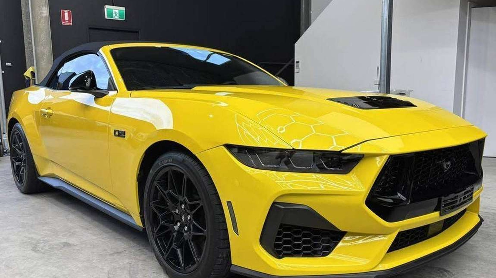

Spray painting
Single panels through to full resprays, colour matched to the vehicle's existing paint and finished in a booth rather than a shed.
Spray painting, paint correction and ceramic protection in Bathurst. Panel prep and colour matching done properly, because the finish is decided before the first coat goes on.

Paint work and detailing share the same foundation: the surface. A panel that is not prepared properly will show every shortcut in the finished job.
Single panels through to full resprays, colour matched to the vehicle's existing paint and finished in a booth rather than a shed.
Dents and imperfections filled, blocked and primed before colour — the stage that decides whether the repair is visible at an angle.
Swirls, wash marks and oxidation machine polished out in stages, judged under proper lighting rather than in the sun.
A coating applied to corrected paint so water beads, grime lifts easier and the gloss holds far longer than wax.
Wash, clay and interior clean — the finish work that keeps a car looking right between paint jobs.
They are often quoted together, but they follow different sequences. Knowing which one your car needs is the first conversation.
One workshop, two jobs that get confused with each other. Paint work needs a booth, a colour match and a bake; detailing needs time, the right pads and a surface that is already sound. We do both, so nothing gets pushed onto someone else.
Single panel repairs through to full resprays — bumper, guard, door and boot work, colour matched by code then checked against the panel in daylight, sprayed in a booth and baked.
Dents worked out or filled, blocked straight, primed and guide-coated. This is the stage nobody sees and the one that decides whether a repair shows at an angle in sunlight.
Machine compounding and polishing in stages to remove swirls, holograms, oxidation and wash marks — measured paint depth first so the clear coat is never cut through.
Panel wiped, decontaminated and levelled, then coated and cured. Gloss and bead up, and washing gets easier — protection over sound paint, never a substitute for correction.
Wheels, arches and glass, tar and iron removal, trim and rubber dressed, then carpets, seats, headlining and vents cleaned through to a dry finish.
Tidy-ups before a car goes on the market, and repair work documented with before-and-after photos for insurance or a lease hand-back.
Paint and detail work from the workshop.


A respray only looks as good as the panel underneath it. Filler that has not been blocked flat, primer that has not been keyed, or a blend that was rushed will show up months later as a shadow line or a wave in the reflection — long after the car has been handed back.
So the time goes into the boring part: stripping back to sound paint, repairing the damage properly, priming and blocking until the panel is straight, then matching colour against a spray-out card in daylight. Only then does the car go into the booth.
The same logic applies to correction. Paint depth is measured before a machine touches it, because polishing through a thin panel is a repaint, not a correction. If the paint cannot safely take the work, that is said before the job starts rather than discovered halfway through.
Vehicles come in from across the region — if you are further out, ask about drop-off and collection.
What needs painting or correcting, the colour, and whether it is one panel or the whole car. Photos help for detailing.
SJN Paint & Detailing
Bathurst NSW · 0439 380 081